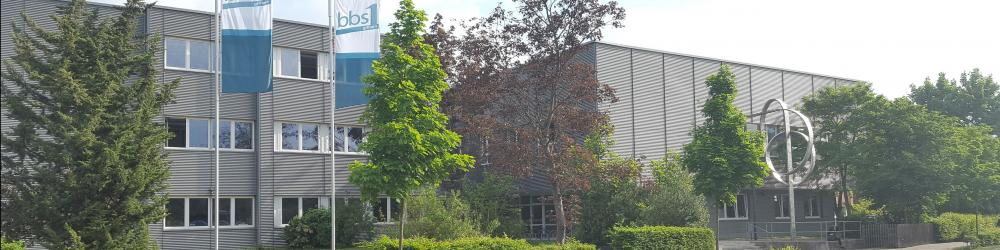

Derzeitig besuche ich die Wirtschaftsklasse Fachrichtung Informatik in der BBS 1 in Gifhorn.
Meine Lehrer dort sind:
Frau Dr. Bauerdorf, meine Informatiklehrerin
Herr Michal, mein Techniklehrer
Frau Leitner, meine Politiklehrerin
Herr Sander, mein Deutschlehrer
Frau Ebel, meine BWL Lehrerin
Frau Elisis, meine Englischlehrerin
In Informatik lerne ich gerade Java Skript und eine Weiterführung von HTML und CSS. Das Gebäude der Schule ist in drei Teile aufgeteilt, A, B und C.
Ich bin hauptsächlich in Trakt A und habe insgesamt 8 Technik und Informatik stunden. In Technik lernen wir dinge über die Hardware und Software eines PCs.
Einige Themen waren dort die Sicherung, Systemadministration und Diagnose eines PCs bei Windows und das verstehen verschiedener Hardware Komponenten wie die Grafikkarte.
Bisher gefällt mir die Schule gut, jedoch ist der Bus meist sehr voll und kommt zu spät, weswegen ich oft gerade so beim Unterricht ankomme.
Auf meiner alten Schule, der Realschule Meinersen, konnte ich erfolgreich den erweiterten Realschulabschluss erreichen.
Zudem habe ich dort einen Informatikkurs über HTML und CSS bei Herr Gaubinger abgeschlossen.
Ich ging von der 5 bis zu 10 Klasse auf diese Schule und es war eigentlich ganz schön. Es gibt dort einen großen Außenbereich, Mehrere Fußballplätze und eine große Mensa.